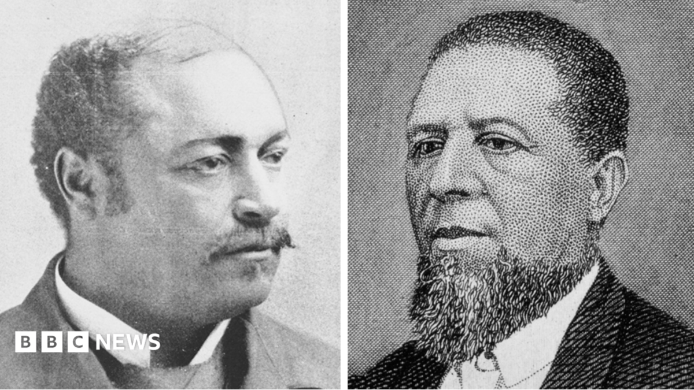

World · 13 Nov 2026
Before Scott Colom, these two men were the last black US senators from Mississippi

The Democratic candidate won in a southern state that had not seated a black senator since 1874.
Multiple independent publishers are reporting on the same development: Before Scott Colom, these two men were the last black US senators from Mississippi.
The available reports place the development in the World category. The accounts were compared for agreement on the central event rather than simply shared names or broad topics.
One of the available reports describes the development this way: The Democratic candidate won in a southern state that had not seated a black senator since 1874.
Readers should consult the linked source reports for additional context, updates and details that may change as the story develops.
Sources
This article was produced by the C. O. Eric AI Newsroom from the cited sources. It is published only after automated evidence and safety checks.